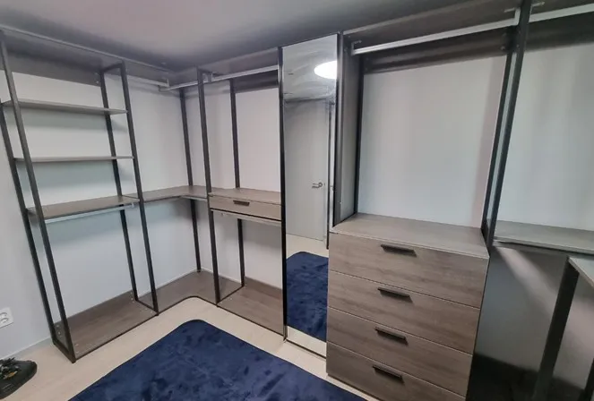

Brand · Emons
에몬스 드레스룸
이전설치
드레스룸은 행거보다 서랍장과 거울이 더 신경 쓰입니다.
드레스룸을 옮길 때 가장 손이 많이 가는 것은 폴과 선반보다 서랍장, 전신거울, 유리 상판 같은 부속입니다. 무게가 있고 깨지기 쉬워서, 서랍을 빼고 유리를 따로 포장하는 순서가 중요합니다.
코니처는 부속을 먼저 분리해 따로 포장한 뒤 행거 본체를 해체하고, 새 공간에서는 본체를 세운 다음 부속을 제자리에 다시 결합합니다. 에몬스 공식 서비스센터가 아닌 가구 이전설치 전문 업체입니다.

Situations
부속이 있는 드레스룸에서 신경 쓰는 것
전신거울이 붙어 있을 때
거울을 먼저 떼어 따로 포장하고 새 공간에서 다시 고정합니다.
유리 상판 서랍장
상판을 분리해 운반 중 파손을 막습니다.
서랍장이 여러 개일 때
서랍을 빼서 옮기고 새 자리에서 레일을 맞춥니다.
블랙·그레이 프레임
어두운 프레임은 흠집이 잘 보여 모서리를 감싸 운반합니다.
Checklist
부속별 확인 항목
| 부속 | 확인 내용 | 이유 |
|---|---|---|
| 전신거울 | 크기, 고정 위치 | 따로 포장하고 새 고정 위치를 정합니다 |
| 유리 상판 | 분리 가능 여부 | 운반 중 깨짐을 막습니다 |
| 서랍장 | 개수, 바퀴 유무 | 운반 방법과 인원을 정합니다 |
| 화장대 | 상판·수납 칸 구성 | 결합 순서를 기록합니다 |
| 새 공간 | 거울을 둘 벽 | 빛 방향과 문 위치를 봅니다 |
Process
부속이 있는 드레스룸 이전 순서
부속 확인
사진으로 거울·서랍장·상판 구성을 확인합니다.
부속 분리·포장
거울과 유리를 먼저 떼어 따로 포장합니다.
본체 해체
선반과 폴을 칸별로 해체합니다.
본체 설치
새 공간에 본체를 먼저 세웁니다.
부속 결합·점검
거울 고정과 서랍 여닫힘까지 확인합니다.
FAQ
자주 묻는 질문
거울이 깨질까 걱정돼요
거울과 유리는 따로 포장해 옮깁니다. 이미 금이 간 부분이 있으면 작업 전에 사진으로 함께 확인합니다.
서랍 안 물건은요?
서랍은 비워 두셔야 합니다. 무게 때문에 레일이 휘거나 운반 중 빠질 수 있습니다.
서랍장 바퀴가 망가졌어요
사진으로 상태를 보고 운반과 설치 방법을 안내드립니다.
새 집에서 거울 위치를 바꿔도 되나요?
새 공간의 문과 창 위치를 보고 더 편한 자리로 옮겨 설치할 수 있습니다.
에몬스 제품만 하나요?
아닙니다. 브랜드와 관계없이 드레스룸 이전설치를 진행합니다.